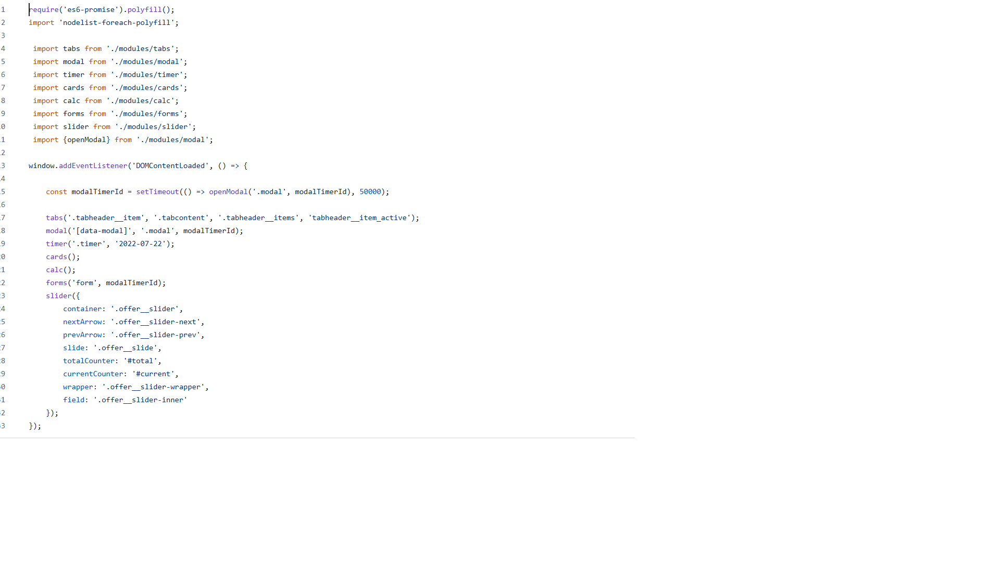
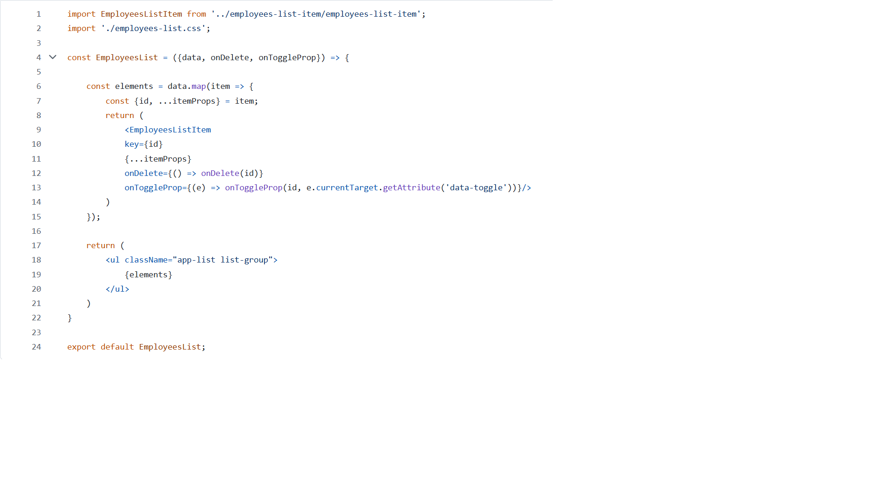
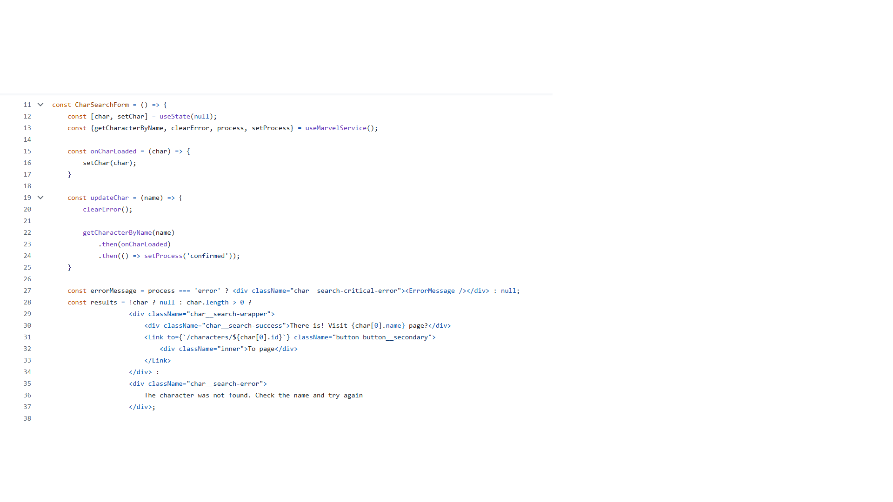

Work Experience:
Food Project:
This project is built using pure JavaScript, following modern coding standards and practices.
It utilizes Webpack, Babel, and Bootstrap, with all components organized into modules
for better structure and project management.
Link to GitHub

This code initializes the main elements of the web page interface.
It uses a modular architecture to make the code more organized and maintainable,
loading each function separately and configuring it with selectors and parameters.
Employees Accounting App:
This JavaScript and React-based application allows employers to efficiently track employee salary
calculations and add various bonuses. It includes features for editing employee data, as well as
adding or removing employees. I plan to rewrite this project in TypeScript.
Link to GitHub

This code example demonstrates the functionality of removing an employee from the list
of employees by their ID using props. The onToggleProp function is responsible for the
operation of the buttons that handle employee promotion and bonus eligibility,
retrieving it through an HTML attribute.
Marvel Project:
An online comic book store featuring a collection of Marvel comics.
This project integrates the Marvel API for comic searches and uses additional
libraries like Yup for form validation and React-Helmet for managing metadata.
The code was continuously improved and optimized using modern development approaches.
Link to GitHub

This code example shows how React hooks are used to fetch character props
from the database for rendering on the website when searching for a specific
character from the Marvel universe. Error handling is also implemented in case
the character does not exist or the character link is currently unavailable.